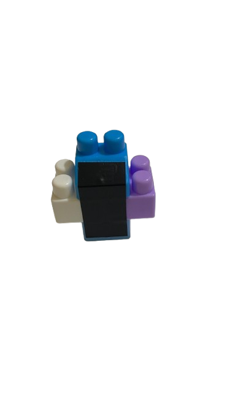

📜 Aturan dan Poin Misi
Pelajari detail objek, batasan maksimal, dan perolehan poin setiap misinya.
Misi 1: Start Robot
Misi pertama adalah memastikan kedua robot dapat memulai pergerakan dengan sempurna dari area start kotak masing-masing.
Misi 2: Bunga Tulips dan Cemara

🌷 Bunga Tulips
Maks 6 Buah
🌲 Bunga Cemara
Maks 6 Buah
Misi 3: Pohon

🌳 Pohon Besar
Maks 5 Buah
🪴 Pohon Kecil
Maks 8 Buah
Misi 4: Jamur

Jamur Hutan
Maksimal 8 Buah
40 Pts
10 Pts
Pengurangan
Nilai (Penalti)
Keluar Lapangan
4 roda robot keluar dari area bermain.
Merusak Properti
Menyebabkan kerusakan arena / komponen.
Logika Sistem Klasemen
1. Prioritas Total Skor
Peringkat utama tim murni ditentukan dari akumulasi skor tertinggi Misi 1-4 setelah dikurangi total penalti.
2. Tie-Breaker (Skor Seri)
Jika skor akhir seri/sama, tim yang mencatat Waktu Tim (Detik) tersingkat akan memenangkan posisi peringkat atas.
⚡ Pencarian Driver Tercepat
Selain peringkat tim, aplikasi juri otomatis melacak potensi individu. Driver 1 dan Driver 2 akan diadu secara sistem untuk memecahkan rekor waktu penyelesaian manuver paling cepat di tabel klasemen khusus individu!